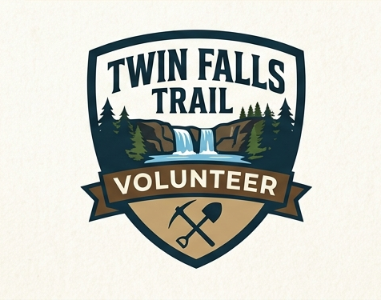

Two ways to give back. One way to get rewarded.
Work side-by-side with our Trail Coordinator. You’ll be on the front lines of trail design, improving "tread" (the walking surface), and building the bridges and steps that make our park accessible.
Take ownership of your favorite trail. Commit to walking it at least once a month. You’ll be our "eyes on the ground"—clearing branches, removing trash, and reporting issues.
Beyond the fresh air and Appalachian views, we want to say thank you.